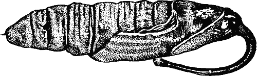

Все о
Perl 6
Здравствуйте !
Это домашняя страничка проекта по созданию книги, посвященной Perl 6. Основная задача этой книги - стать полезным источником знаний о языке Perl 6 для всех желающих изучить этот язык или просто интересующихся Perl 6. Данная книга - открыта для авторов и если вам интересно участвовать в написании этой книги, присылайте материалы в виде статей или патчей ( проект располагается на github ).
Основным источником материалов для этой книги, на данный момент является английская версия. Ее пишут разработчики наиболее динамично развивающейся реализации Perl 6 - rakudo. Их книга располагается по адресу: http://github.com/perl6/book.
Исходные тексты этой книги располагаются по адресу http://github.com/zag/ru-perl6-book. Формат статей этой книги - Perl 6 Pod. Частично материалы, описывающие этот формат на русском языке, размещены на страницах блога http://zag.ru. Может оказаться полезной страница конвертера Perl 6 Pod to HTML. Если вы не хотите изучать Pod, просто высылайте статьи в их оригинальном виде на адрес me(at)zag.ru. Они будут приведены к нужному формату.
Онлайн версии книги
Здесь можно почитать HTML и PDF варианты книги.
Форматы для чтения
- Открыть одностраничную HTML версию .
- Открыть многостраничную HTML версию .
- Открыть PDF версию .
- Загрузить одностраничную HTML версию в виде .zip архива .
- Загрузить многостраничную HTML версию в виде .zip архива .
Сообщения о найденных ошибках, в том числе неточностях в представленных материалах, всегда приветствуются.
Адрес для связи: me(at)zag.ru

This work is licensed under a Creative Commons Attribution-Noncommercial-Share Alike 3.0 Unported License